Look n°20
Balcon cosy rose et cerisier
Un balcon cosy pour les soirées douces : salon en résine tressée, cerisier en fleurs, mur de fleurs roses et guirlande guinguette allumée. Voici les articles pour recréer ce look chez toi.
Prix au 10/11/2026
-
Salon de balcon en résine tressée beige (3 places + pouf)
Ensemble modulable de 4 pièces : 2 fauteuils d'angle, 1 assise centrale et 1 pouf, en résine tressée beige sable avec coussins crème. 175 × 117 × 85 cm en L, assise à 37 cm.
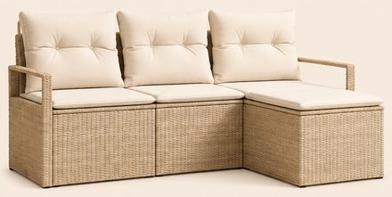
617,99 €Voir sur Amazon -
Tables basses gigognes rondes effet marbre et doré (lot de 2)
Plateaux blancs veinés de gris, piètement en anneau doré : Ø 78,5 × H 46,5 cm et Ø 59 × H 36,5 cm. La petite se glisse sous la grande.
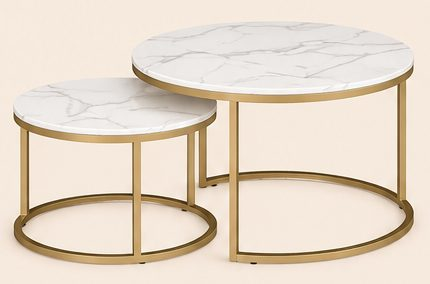
86,67 €Voir sur Amazon -
Housses de coussin roses à nœuds en relief (lot de 2)
Rose poudré, petits nœuds en peluche en relief sur fond tricoté. 45 × 45 cm, housses seules.
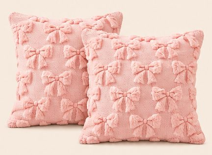
11,99 €Voir sur Amazon -
Housses de coussin fausse fourrure à côtes, crème (lot de 2)
Fausse fourrure douce à grosses côtes verticales. 50 × 50 cm, housses seules.
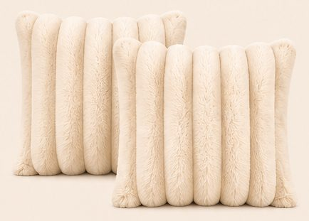
26,47 €Voir sur Amazon -
Cerisier artificiel en fleurs rose, 160 cm
Tronc fin, branches couvertes de fleurs rose pâle, petit pot noir. 160 cm de haut, 80 cm de large environ.
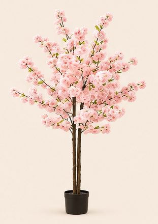
89,99 €Voir sur Amazon -
Lanternes blanches ajourées (lot de 2)
Métal laqué blanc et verre, toit pointu ajouré, fenêtres en arche. 50 cm et 34 cm de haut.
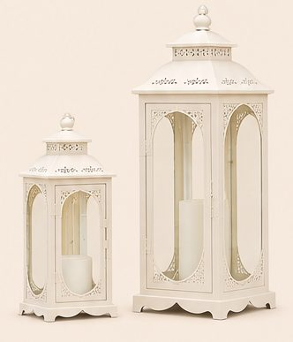
52,99 €Voir sur Amazon -
Fauteuil suspendu en macramé à franges, beige
Cercle de Ø 82 cm en corde de coton tressée, longues franges et coussin rond crème. 143 cm de haut une fois suspendu.
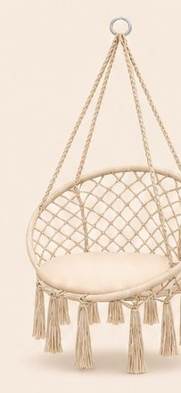
41,80 €Voir sur Amazon -
Mur de fleurs artificielles roses (12 panneaux)
Roses, pivoines et hortensias roses, pêche et blancs. 12 panneaux de 38 × 38 cm, de quoi faire un mur de 1,52 × 1,14 m, un peu plus grand que sur l'image.
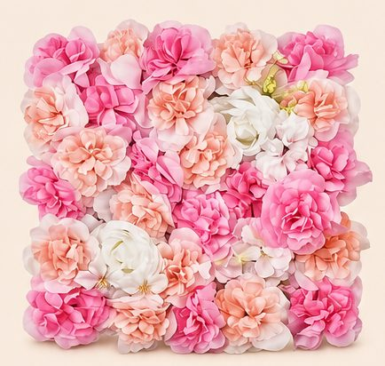
67,90 €Voir sur Amazon -
Vase ondulé en céramique beige et pivoines roses
Vase en céramique beige mate aux bords en vagues, 17 × 17 cm, et 2 bouquets de pivoines artificielles rose pâle et vieux rose de 31 cm.
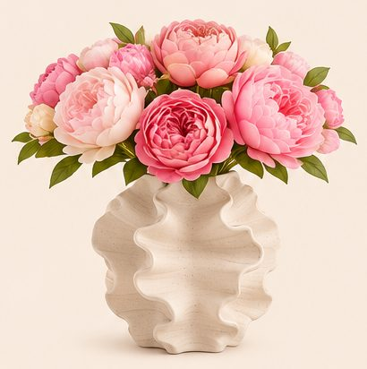
-
Plantes tombantes dans un cercle blanc (lot de 2)
Plante « collier de perles » artificielle dans un cercle blanc avec demi-pot, à suspendre par sa corde en jute. 21 cm de diamètre environ.
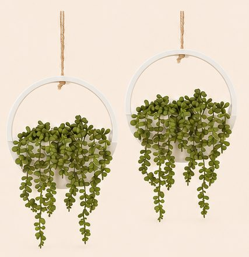
25,99 €Voir sur Amazon -
Tapis rond rose à poils longs, Ø 120 cm
Rose clair, poils longs très doux.
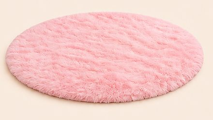
27,18 €Voir sur Amazon -
Plaid bulles rose, 150 × 200 cm
Peluche épaisse rose pâle à grosses bulles en relief.
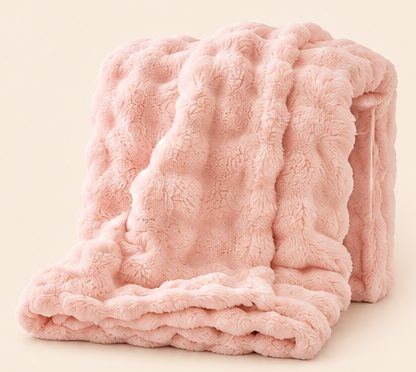
29,99 €Voir sur Amazon -
Bougies LED en verre avec guirlande (lot de 3)
Bougies ivoire à flamme vacillante dans des cylindres en verre, avec un fil de micro-LED enroulé. Ø 7,5 cm, 10, 12,5 et 15 cm de haut.
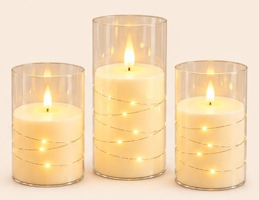
21,17 €Voir sur Amazon -
Guirlande guinguette LED blanc chaud, 20 m
Câble noir et 30 ampoules rondes de 4 cm à filament, lumière blanc chaud.
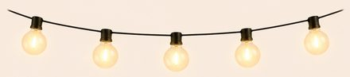
21,98 €Voir sur Amazon
Enregistrer ce look sur Pinterest
Comment naît un lookComment chaque article est choisi, mesuré et vérifiéImage d'inspiration générée par IA. Prix indicatifs, revérifiés toutes les deux semaines.